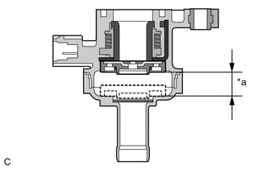

PROCEDURE
INSPECT FLOW SHUTTING VALVE (WATER VALVE)
Visually check the flow shutting valve (water valve).
If the flow shutting valve (water valve) is damaged, replace the flow shutting valve (water valve).
Check the flow shutting valve (water valve) for clogging.
If the flow shutting valve (water valve) is clogged, check if there is foreign matter inside the flow shutting valve (water valve). Clean or replace the flow shutting valve (water valve) as necessary.
Push in the valve and check that it returns quickly to its original position.
If the valve does not operate as specified, check if there is foreign matter inside the flow shutting valve (water valve). Clean or replace the flow shutting valve (water valve) as necessary.

| *a | Valve Lift |
Check the valve lift.
| Standard Valve Lift |
|---|
| 7.9 to 8.8 mm (0.311 to 0.346 in.) |
If the result is not as specified, replace the flow shutting valve (water valve).
Measure the resistance according to the value(s) in the table below.
| Standard Resistance | ||||||
|---|---|---|---|---|---|---|
|
If the result is not as specified, replace the flow shutting valve (water valve).